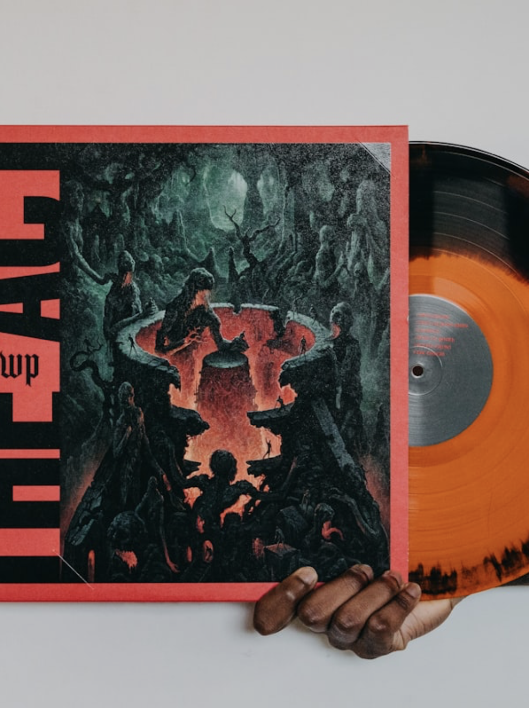

解构节奏
探寻音乐的数字密码
我们将海量曲目划分为六大核心流派。透过听觉的表象，用多维度音频特征数据揭示它们的底层DNA。
巨星引力场
气泡大小代表该歌手在数据池中的热度权重。
点击头像，即可试听他们的全球现象级爆款代表作。
Spotify Music Data Analysis
我们将海量曲目划分为六大核心流派。透过听觉的表象，用多维度音频特征数据揭示它们的底层DNA。
旋律抓耳，结构清晰。作为受众最广的流派，它巧妙平衡了节奏与旋律，各项音频特征往往处于最易被大众接受的“黄金区间”。
充满激情的切分节奏与热情的打击乐。拉丁音乐的律动感极强，数据上往往呈现出极高的舞动度与饱满的情绪能量。

丝滑的声线与深情的律动交织。R&B 在数据上通常表现出适中的能量值，更注重原声乐器与人声的融合，情绪表达细腻。
强烈的吉他失真与有力的鼓点。充满反叛与力量，其音频特征的显著标志是极高的能量值与响度，以及极低的原声度。
强调节拍与人声的密集输出。在音频数据上，Rap 曲目通常拥有极高的“语言度（Speechiness）”和扎实的低音律动。
完全由合成器与电子节拍构建的音景，专为舞池而生。它完美融合了巅峰级别的舞动度与持续的高能量输出。
气泡大小代表该歌手在数据池中的热度权重。
点击头像，即可试听他们的全球现象级爆款代表作。